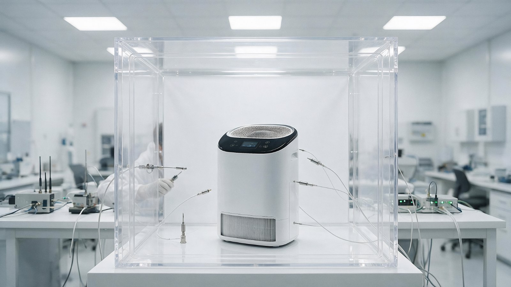
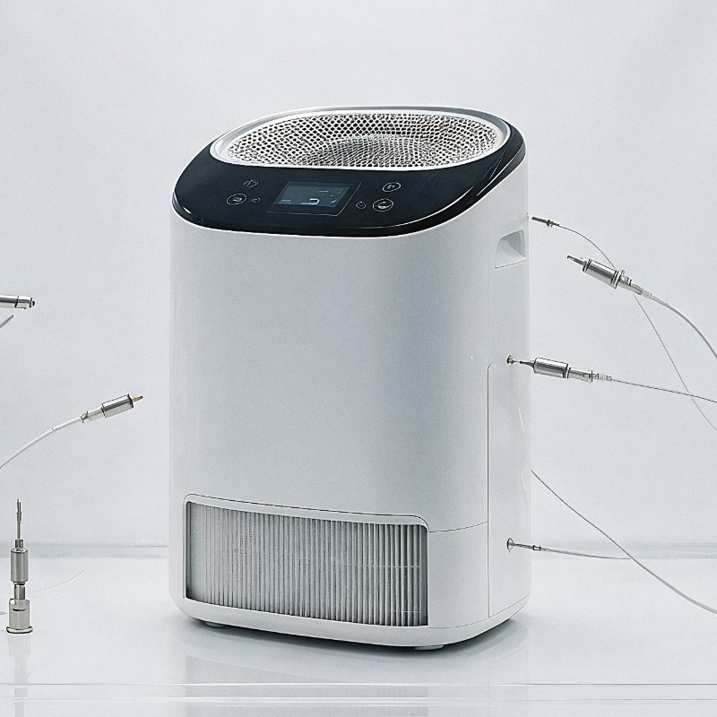

Art Direction Guide · 산출물 문서
미촬영 이미지
연출 가이드
아직 찍지 않은 사진을 어떻게 찍을 것인지 먼저 정하는 문서입니다. 촬영팀 · 스튜디오 · 현장 담당자에게 그대로 전달할 수 있도록 조명 · 구도 · 소품 · 보정 기준을 한 곳에 모았습니다.
브랜드 사진이 흔들리는 이유는 대부분 촬영 실력이 아니라 기준의 부재입니다. 각 항목은 “좋게 찍어달라”가 아니라 숫자와 금지 목록으로 적었습니다.
브랜드 톤앤매너 기본
여백이 먼저
피사체를 키우는 대신 주변을 비웁니다. 프레임의 최소 35%는 정보 없는 면으로 둡니다.
무채색 + 소재감
색은 제품 자체의 웜 그레이와 금속 밴드에서만 나옵니다. 배경·소품에 원색을 넣지 않습니다.
연출은 최소
사람이 웃으며 제품을 가리키는 컷을 만들지 않습니다. 손의 동작과 상태만 담습니다.
컬러 팔레트
화면·인쇄·촬영 배경에 공통 적용합니다. 아래 6색 외의 색은 사용하지 않습니다.
Metal(#8A7F6D)은 제품 밴드에서 추출한 색입니다. 화면에서는 강조 1곳 이상 쓰지 않습니다.
타이포그래피 스케일
| 단계 | 크기 | 굵기 · 자간 | 용도 |
|---|---|---|---|
| Display | 40 – 92 px | 200 · −0.035em | 페이지 첫 문장. 한 화면에 한 번만. |
| H2 | 27 – 50 px | 200 · −0.03em | 섹션 제목 |
| H3 | 18 – 23 px | 500 · −0.025em | 항목 제목 |
| Body | 14.5 – 15 px | 400 · 행간 1.85 | 본문 |
| Caption | 11 – 12.5 px | 400 · 보조색 | 이미지 설명 · 주석 |
| Eyebrow | 10.5 px | 600 · +0.2em · 대문자 | 섹션 라벨 |
촬영 공통 원칙
- 수평 · 수직
- 기울어진 컷을 쓰지 않습니다. 수평선 오차 0.3° 이내로 촬영하고, 후보정 회전은 ±1°까지만 허용합니다.
- 렌즈
- 왜곡이 적은 50 – 85 mm 환산 화각. 광각 과장 컷은 사용하지 않습니다.
- 심도
- 제품 f/5.6 – f/8 (전체 선명), 인물·활동 f/2.8 – f/4 (배경 분리).
- 화이트밸런스
- 촬영 시 그레이카드 1컷 필수. 실내 5600 K, 야외 5200 – 5600 K 기준.
- 노출
- 하이라이트 클리핑 금지. 밝은 톤을 유지하되 흰 면이 245 이상으로 날아가지 않게 촬영합니다.
- 여백
- 웹 크롭을 고려해 상하좌우 15% 이상 여유를 두고 촬영합니다. (1:1 · 4:3 · 16:9 재단 대응)
- 금지
- 비네팅 · 강한 그림자 · 렌즈 플레어 강조 · 과채도 · HDR 톤매핑 · 스톡 느낌의 미소.
실험실 촬영 컷
기술을 설명하는 사진입니다. “깨끗해 보이는 연구소”가 아니라 측정이 실제로 벌어지고 있는 장면을 담는 것이 목적입니다.

01키 라이트 5600K · 상단 45° 02필 라이트 1 : 2 · 디퓨저 통과 03피사체 = 프레임 중앙 · 수평 0° 04챔버 전체를 프레임 안에 05케이블은 정돈해 하단 1/4 이내조명
- 키 라이트
- 피사체 기준 상단 45°, 색온도 5600 K. 대형 소프트박스로 아크릴 챔버의 반사를 넓게 흐트러뜨립니다.
- 필 라이트
- 반대편에서 1 : 2 광량비. 그림자를 지우지 말고 연하게 남깁니다. 무영 조명은 제품이 떠 보입니다.
- 배경 분리
- 뒷벽에 약한 백라이트 1등. 챔버 모서리 라인이 배경에 묻히지 않을 만큼만.
- 반사 관리
- 아크릴 면에 조명기·촬영자가 비치지 않도록 검은 플래그를 세웁니다. 촬영 전 반사 체크 1컷 필수.
- 금지
- 파란 톤의 “첨단 연구소” 조명, 컬러 젤, 링라이트 반사, 형광등 플리커.
구도
- 카메라 높이
- 피사체 중심과 같은 아이 레벨. 내려다보거나 올려다보지 않습니다.
- 피사체 배치
- 제품은 프레임 중앙, 챔버는 좌우 대칭. 계측 장비는 3분할 세로선 바깥쪽에 둡니다.
- 여백
- 상단 15% 이상 비웁니다. 텍스트 오버레이가 얹히는 영역입니다.
- 화각
- 전경 50 mm 기준. 근접 컷은 85 – 100 mm 로 왜곡 없이.
- 초점
- 제품 전면 조작부에 고정. 프로브 끝단이 살짝 흐려지는 정도까지 허용.
소품 · 인물
반드시 포함
제외
- 연구원 등장
- 얼굴은 측면 또는 뒷모습. 손의 작업 동작을 중심으로 담고, 카메라를 보지 않습니다.
- 복장
- 무채색 방진복 · 무광 장갑. 로고·글자 없는 것으로 준비합니다.
- 동선
- 연구원은 챔버 뒤쪽 또는 좌측에 배치해 제품을 가리지 않게 합니다.
컷 리스트
| No. | 컷 | 비율 · 크기 | 사용처 |
|---|---|---|---|
| L-01 | 챔버 전경 (와이드) 제품 + 챔버 + 계측 장비 전체 | 16:9 · 1600 px | 기술 페이지 히어로 · 메인 풀블리드 밴드 |
| L-02 | 제품 근접 챔버 안 제품 + 프로브 접점 | 1:1 · 800 px | 기술 페이지 본문 · 상세 이미지 |
| L-03 | 연구원 작업 손 + 프로브 조작 (얼굴 비노출) | 3:2 · 900 px | 브랜드 스토리 · 신뢰 요소 |
| L-04 | 계측 화면 데이터 수집 장비 표시부 근접 | 3:2 · 900 px | 실험 데이터 섹션 보조 |
| L-05 | 필터 단면 분해된 필터 층 정렬 (탑뷰) | 4:3 · 1200 px | 기술 설명 · 상세페이지 |
현장 체크리스트
야외 나무심기 활동컷
ESG 활동을 “행사”가 아니라 일하는 장면으로 담습니다. 단체 기념사진, 현수막, 브이 포즈는 이 브랜드의 언어가 아닙니다.
채광
- 촬영 시간
- 일출 후 1시간 이내 또는 일몰 전 1.5시간. 정오 촬영은 하지 않습니다.
- 광원 방향
- 역광 또는 반역광. 인물 윤곽과 잎에 빛이 걸리게 하고, 정면광은 피합니다.
- 보광
- 흰색 리플렉터로 얼굴 그림자를 +0.7 EV 정도만 올립니다. 스트로보는 사용하지 않습니다.
- 노출
- 하늘 기준 −1.0 EV, 인물 기준 +0.3 EV. 하늘이 완전히 날아가면 재촬영합니다.
- 화이트밸런스
- 5200 – 5600 K 고정. 자동 WB 로 컷마다 색이 흔들리지 않게 합니다.
- 플레어
- 약한 헤이즈는 허용. 육각형 고스트가 화면을 가로지르면 사용하지 않습니다.
인물 구도
- 카메라 높이
- 작업자와 같은 무릎 높이. 서서 내려다보는 각도는 관찰자 시점이 되어 쓰지 않습니다.
- 인물 배치
- 3분할 세로선 위. 2인 이상일 때 시선과 동작이 묘목을 향해 모이도록 배치합니다.
- 시선
- 카메라 응시 금지. 웃는 표정을 요구하지 않고 작업에 집중한 상태를 기다립니다.
- 손 클로즈업
- 흙 묻은 손 · 뿌리 · 물조리개는 반드시 1컷 이상. 브랜드 신뢰의 근거가 되는 컷입니다.
- 군집 컷
- 3인 이상이 각자 다른 동작을 하는 상태. 일렬 정렬 · 단체 기념사진은 사용하지 않습니다.
- 레이어
- 전경(흙·풀) · 중경(인물) · 원경(숲·빛) 3층이 모두 들어오게 구성합니다.
의상 · 소품
반드시 포함
제외
컷 리스트
| No. | 컷 | 비율 · 크기 | 사용처 |
|---|---|---|---|
| O-01 | 활동 전경 (와이드) 역광 · 3층 레이어 · 다수 인물 | 16:9 · 1600 px | 브랜드 페이지 히어로 · 메인 ESG 섹션 |
| O-02 | 손 · 묘목 근접 흙을 다지는 두 손 | 3:2 · 900 px | ESG 본문 · 상세페이지 |
| O-03 | 인물 측면 무릎 높이 · 작업 집중 상태 | 3:4 · 600 px | 브랜드 스토리 세로 컷 |
| O-04 | 묘목 단독 역광 잎맥 · 배경 압축 | 1:1 · 800 px | 썸네일 · SNS |
| O-05 | 조림지 원경 식재 완료 구역 · 이듬해 재촬영분 | 16:9 · 1600 px | 연도별 실적 비교 · 리포트 |
현장 체크리스트
색 보정 기준
촬영이 좋아도 보정이 흔들리면 브랜드가 흔들립니다. 모든 컷에 같은 보정을 적용합니다.
좌우로 드래그해 비교하세요. 비교를 위해 동일 이미지에 보정 값을 반대로 적용한 연출 예시입니다.
기본 보정 값
| 항목 | 실험실 컷 | 야외 활동컷 | 비고 |
|---|---|---|---|
| 노출 | 0 ~ +0.2 | +0.3 | 밝은 톤 유지, 클리핑 금지 |
| 대비 | +8 | +5 | 과대비 금지 |
| 채도 | −12 | −8 | 초록의 형광기를 반드시 뺍니다 |
| 하이라이트 | −15 | −25 | 야외는 하늘 복원 우선 |
| 섀도 | +10 | +15 | 완전한 검정은 남기지 않습니다 |
| 색온도 | −200 K | −100 K | 따뜻함은 유지하되 노란기 제거 |
| 선명도 | +10 | +8 | 텍스처 강조 금지 |
| 비네팅 | 0 | 0 | 사용하지 않습니다 |
보정 값은 참고 기준이며 촬영 원본에 따라 ±20% 범위에서 조정합니다. 최종 판단 기준은 여러 컷을 나란히 놓았을 때 톤이 같은가입니다.
Do / Don’t
아래 “Don’t” 이미지는 같은 원본에 잘못된 보정·구도를 의도적으로 적용해 만든 비교용 예시입니다.

- 중립적인 흰 톤, 자연스러운 반사
- 제품이 화면 중앙, 수평 유지
- 그림자를 옅게 남겨 입체감 확보
- 채도·대비를 올려 “첨단” 느낌을 낸 보정
- 흰 면에 색이 끼어 제품 색이 달라 보임
- 화면·상세페이지 간 톤이 어긋남
- 행위(손·흙·뿌리)가 주인공
- 역광의 부드러운 헤이즈 유지
- 수평 유지, 여백 확보
- 기울어진 수평(회전 1.6°) — 불안정해 보임
- 섀도를 눌러 흙과 손의 정보가 사라짐
- 과한 크롭으로 전경·원경 레이어 상실
이미지 사용 규격
카페24 자사몰에 올릴 때의 실제 규격입니다. 원본을 그대로 올리면 모바일에서 로딩이 무너집니다.
| 용도 | 권장 크기 | 비율 | 용량 상한 | 포맷 |
|---|---|---|---|---|
| HERO-W | 메인 · 페이지 히어로 (가로) | 1600 × 900 | ≤ 300 KB | JPEG q80–86 |
| HERO-V | 메인 히어로 (세로 제품컷) | 1200 × 1490 | ≤ 290 KB | JPEG q86 |
| SECT | 섹션 본문 이미지 | 1000 × 563 | ≤ 160 KB | JPEG q86 |
| SQ | 상품 정사각 · 구매 영역 | 900 × 900 | ≤ 150 KB | JPEG q86 |
| THUMB | 목록 · 카드 썸네일 | 560 × 315 | ≤ 65 KB | JPEG q86 |
| MOB | 모바일 전용 배너 | 750 × 1000 | ≤ 180 KB | JPEG q82 |
| DETAIL | 상품 상세 본문 (세로 분할) | 860 폭 · 분할당 ≤ 1500 h | 장당 ≤ 200 KB | JPEG q82 |
| ICON | 아이콘 · 로고 | 벡터 | ≤ 10 KB | SVG |
- 상세페이지 총량
- 한 상품 상세의 이미지 총합 3 MB 이하. 초과 시 모바일 이탈이 급증합니다.
- 파일명
- seum-a1-lab-01-1600.jpg 형식. 한글·공백·특수문자를 쓰지 않습니다.
- 대체 텍스트
- 모든 이미지에 무엇이 찍혔는지 서술형으로 작성합니다. “이미지1” 금지.
- 지연 로딩
- 첫 화면 밖 이미지는 loading="lazy" + width/height 속성 명시.
- 원본 보관
- RAW · 16bit TIFF 는 별도 보관하고, 웹에는 항상 리사이즈본만 올립니다.
촬영 발주 시 전달 항목
외부 스튜디오에 의뢰할 때 아래 항목을 함께 전달하면 재촬영이 거의 발생하지 않습니다.
사전 전달
- 본 가이드
- PDF 로 출력해 촬영 현장에 비치합니다.
- 컷 리스트
- L-01~05 · O-01~05. 컷별 사용처와 비율까지 포함.
- 레퍼런스 보드
- 본 문서의 REF.01 · REF.02 와 주석 이미지.
- 제품 실물
- 촬영 2일 전 도착. 표면 보호 필름 유지 상태로 발송.
납품 조건
- 납품 포맷
- RAW 원본 + 16bit TIFF(보정본) + JPEG(웹용 리사이즈).
- 색 공간
- 보정본 AdobeRGB, 웹용 sRGB 변환 필수.
- 권리
- 사용 범위(자사몰·SNS·인쇄)와 기간을 계약서에 명시. 초상권 동의서 사본 포함.
- 검수
- 1차 셀렉트 → 보정 시안 3컷 확인 → 전체 보정 순으로 진행합니다.